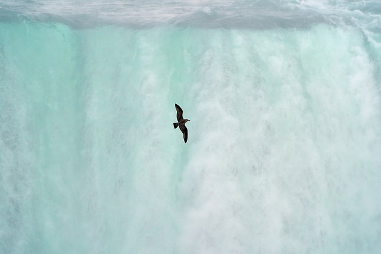
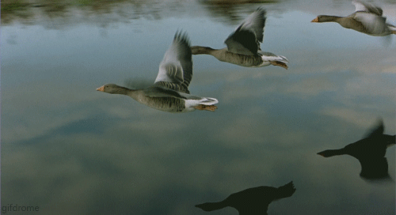
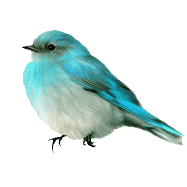

Imagen Bordes redondeados
Pagina PrincipalPor lo general, las aves marinas viven mucho tiempo, se reproducen más tarde y en sus poblaciones hay menos individuos jóvenes, a los que los adultos dedican mucho tiempo. Numerosas especies anidan en colonias, que pueden variar de tamaño entre una docena de aves y millones. Otras son conocidas por realizar largas migraciones anuales, que las llevan a cruzar el ecuador o en muchos casos rodear la Tierra. Pueden alimentarse en la superficie del océano o en sus profundidades, e incluso entre sí. Algunas son pelágicas o costeras, mientras que otras pasan parte del año alejadas completamente del mar. La morfología de las aves marinas depende de muchos factores. Por ejemplo, la simetría del cuerpo de las aves se determina por el tipo y las funciones de su vuelo, que se agrupan en las categorías de caza, desplazamiento a lugares de anidación o reproducción y migración. Un ave marina tiene, en promedio, una masa corporal de alrededor de 700 g, una envergadura de 1,09 m y un área total de alas de 0,103 m². Sin embargo, estas variables dependen del mecanismo de vuelo y de la etiología de la especie.
Imagenes de otro tipo
En algunas partes del este puede que el azulillo índigo sea el ave cantora más abundante, y se puede ver a los machos de plumaje azul profundo cantar a lo largo de cada carretera. A las hembras, de color marrón, no se las ve con tanta frecuencia, y eso se debe a una buena razón: escondidas en densos matorrales, realizan la mayor parte del trabajo de cuidar los huevos y a las crías. Esta especie prefiere los bordes de zonas boscosas con arbustos en lugar de bosques de vegetación ininterrumpida, y es probable que sea más común hoy en día que cuando llegaron los Peregrinos.

Hábitat: Pastizales con matorrales y bordes de bosques con arbustos. Para nidificar prefiere costados de carreteras, campos viejos con arbustos, lindes de bosques y los bordes de cualquier otro tipo de hábitat, como los espacios abiertos alrededor de líneas eléctricas o vías de ferrocarril. También en claros dentro de bosques caducifolios y bordes de pantanos. En el oeste, se lo suele encontrar cerca de arroyos. Durante el invierno se lo ve en el trópico y es más común cerca de los límites de campos de cultivo con matorrales.
Gif e imagen flotante
 Los PatosSi alguna vez te has preguntado si todos los patos vuelan, la respuesta es que la mayoría de ellos tienen la capacidad de hacerlo. Los patos también llamados ánades, parros, corcos o curros, pertenecen a la familia Anatidae, que incluye aves acuáticas voladoras, principalmente de la subfamilia Anatinae. Sin embargo, algunas especies domesticadas han perdido esta capacidad de forma parcial o total y otras, pertenecientes a distintas subfamilias, pero aun así consideradas como patos como el pato vapor austral (Tachyeres pteneres) y el pato vapor de cabeza blanca no volador (Tachyeres leucocephalus) que poseen cuerpos robustos, son incapaces de volar.
A menudo se cree que, por frecuentar ambientes acuáticos, los patos presentan dificultades para alzar vuelo debido a que poseen sus plumas mojadas, pero esto no es cierto. Su plumaje es espeso y denso, y además cuentan con una capa de grasa secretada por la glándula uropigial que colocan con sus picos, lo que les proporciona impermeabilidad y evita que el agua penetre. Gracias a esta adaptación y a su gran musculatura alar, los patos pueden volar con facilidad, desplegando sus alas y mostrando los matices brillantes de su espejo alar en distintas tonalidades.
Thraupis episcopus La tangara azuleja (en Costa Rica, Panamá y Perú) (Thraupis episcopus) también denominada tángara azulada (en Nicaragua), azulejo de jardín (en Venezuela), azulejo común (en Colombia), tangara azulgrís (en México), simplemente azulejo (en Honduras y Ecuador), viudita (en Costa Rica), sui sui o suy suy (en la Amazonía peruana), es una especie de ave paseriforme de la familia Thraupidae, perteneciente al género Thraupis. Es nativa de México, América Central y del centro norte de América del Sur.
Es un ave muy tierna que es pequeña y adorable.Esta especie, ampliamente diseminada, es generalmente común en áreas semi-abiertas y urbanizadas, y en una variedad de hábitats forestales, tanto de regiones húmedas como áridas, principalmente por debajo de los 1500 m de altitud, en pequeño número hasta los 2000 m. Si bien en Perú es una especie propia de la Amazonia, recientemente se han encontrado ejemplares en Lima, donde se han adaptado muy bien sin intervención humana aparente
Descripción: Mide 18 cm de longitud y pesa en promedio 35 g. Los adultos tienen la cabeza y las partes inferiores del cuerpo color gris azulado claro, las partes dorsales son azules oscuras, con verde azul brillante en las alas y la cola, y los hombros con diferentes matices de azul. El pico es corto y grueso. Los dos sexos son similares, pero los inmaduros son de plumaje de color más deslavado. Se reconocen numerosas subespecies, de acuerdo a las variaciones en el matiz de azul en el hombro con respecto al resto del plumaje; pueden ser grisáceos, verdosos o azul púrpura con hombros color lavanda, azul oscuro o blanquecino.
Comportamiento: Es una especie común, muy activa y relativamente confiada. Generalmente anda en parejas, pero también llega a formar grupos no muy numerosos. Se acerca a zonas habitadas por humanos, alimentándose de algunos frutos cultivados. Algunos grupos pequeños saben forrajear en el dosel de selvas de terra firme. Frecuentemente acompaña bandadas mixtas.
Imagen Fondo
Sialia currucoidesS El azulejo de las montañas (Sialia currucoides) es un ave paseriforme de la familia de los túrdidos. Es un pájaro de tamaño medio de aproximadamente 18 cm en el caso de los machos adultos. Características: Los ejemplares machos adultos poseen un color azul brillante. Los ejemplares hembras adultos tienen la cola y el pecho gris. Distribución: Esta especie se ubica en entornos abiertos que comprenden el noroeste de México el oeste de los Estados Unidos y el oeste de Canadá, además se incluyen dentro de este hábitat zonas de montañas y llega hasta bien al norte, casi tocando Alaska, también se encuentra en Colombia y Venezuela. Nidificación y grupos: Estos pájaros suelen anidar en cavidades o en cajas nidos. En áreas remotas, estos pájaros son menos afectados por la competencia por lugares de anidación naturales con otras aves azules.
Luego tenemos al Azulejo común que es similar a la Sialia Descripción Mide aproximadamente 16,5 cm. Presenta una coloración general azul, espalda más oscura, partes inferiores gris azul pálido en contraste, las alas tienen margen azuloso, hombros azul claro a oscuro. La cabeza más pálida que la espalda, el pico y los ojos son de color negro, el cuello azul se hace más grisáceo y pálido; en la cola se torna más intenso.
Ecología Es uno de los pájaros más comunes de Colombia en áreas pobladas. Puede habitar en sitios con distintos grados sucesionales y bordes de bosque, en regiones que van desde secas hasta muy húmedas. Prefieren áreas semiabiertas, rastrojos, cultivos, jardines, bordes de bosque, potreros. Esencialmente no forestales. Por lo general es sociable; se desplaza en parejas o pequeños grupos.
Establecen territorios de anidación, construyen los nidos como una copa profunda y gruesa a alturas comprendidas entre 3 y 20 m. del suelo, en horquetas de los árboles, muy escondidos. En ocasiones, roban materiales de otros nidos. Pone entre dos y tres huevos; los huevos son blancos o azul grisáceo moteados de marrón o rayados de negro; la incubación dura de 10 a 13 días y ambos padres cuidan los pichones. Son muy activos, buscan frutas desde la parte media hasta la copa de los árboles y en ocasiones bajan al suelo para comer frutos caídos; cuando escasea el alimento consumen hojas, flores, insectos y larvas.
DistribuciónDesde México hasta el Oeste de Perú y el Norte de Bolivia, Amazonia Brasileña, Trinidad y Tobago, introducido al Sur de la Florida, Estados Unidos. En Colombia se encuentra entre 0 y 2600 msnm en todo el territorio. En la Universidad EAFIT es muy común en todo el Campus
Para ver y conocer más avez azules haga click en la pequeña ave azul
Imagenes ordenadas con filtros
El bhúo es un animal maravilloso como se puede apreciar en las siguientes imagenes: